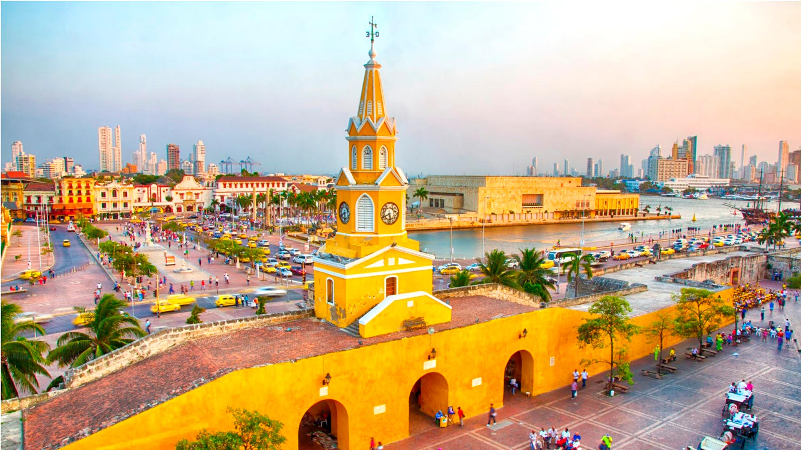

El llegat colonial espanyol: Cartagena d'Índies, Vila de Leyva i Popayán Qualsevol viatge a Colòmbia ha de passar per Cartagena d'Índies. El nom de Cartagena d'Índies evoca Històries de pirates, aventures i jocs d'Influències en un dels majors antics Centres de Poder del Nou Món. L'herència cultural, i Arquitectònica Que deixo Aquella Època ha Convertit a la ciutat caribenya a ungla de les mes belles i llegendàries de Tota Sud-amèrica.
Si ets amant de l'arquitectura colonial tens dues joies més a veure a Colòmbia. Vila de Leyva és una petita ciutat fundada al segle XVI que bé mereix una excursió d'una nit des de Bogotà. Al sud del país, és Popayán la que atrau els viatgers. Puja la suau turó verd de la ciutat al capvespre i contempla, en flames, les cúpules d'esglésies i convents que sobresurten en el perfil d'estrets carrers i blanques cases colonials.
Cartagena ha estat una ciutat principalment associada amb la història pirata, doncs va ser allà on es van presentar nombrosos atacs per part dels pirates provinents d'Europa, que van trobar a la ciutat un lloc adequat per a saquejar en l'època colonial, el que la va fer en el seu moment, convertir-se en la ciutat més reforçada d'Amèrica del Sud i el Carib, arribant a estar gairebé tan reforçada com el mateix Golf de Mèxic en la seva època. En l'actualitat es manté la seva arquitectura colonial.
Amb el gran pas del temps, Cartagena ha desenvolupat la seva zona urbana, conservant el centre històric i convertint-se en un dels ports de major importància a Colòmbia, el Carib i el món així com cèlebre destinació turística. Actualment la població total de la seva capçalera és de 971 700 habitants, sent el cinquè (5) municipi més poblat del país. El seu centre històric, la «Ciutat Emmurallada», va ser declarat Patrimoni Nacional de Colòmbia en 1959 i per la Unesco Patrimoni de la Humanitat el 1984. L'any 2007 la seva arquitectura militar va ser guardonada com la quarta meravella de Colòmbia.
